ROLE OVERVIEW
围绕 Robotaxi 乘客端，完成从功能设计到数据闭环的产品实践
独立承接活动、场景卡及基础乘车链路等需求，覆盖需求定义、方案设计、研发协同与上线验收；同时参与数据体系建设，并探索 AI 在产品工作中的落地。
10+场主导跨职能评审
50+项评审意见推动闭环
60+页交互原型
108项用户画像指标梳理
03 / INTERNSHIP
独立承接活动、场景卡及基础乘车链路等需求，覆盖需求定义、方案设计、研发协同与上线验收；同时参与数据体系建设，并探索 AI 在产品工作中的落地。
CORE CASE活动产品 0—1
面向 Robotaxi 试运营拉新与促活场景，从单次活动需求出发，完成 C 端参与链路、运营配置后台与数据方案设计，并在多轮评审中持续补齐任务、助力与奖励规则边界。
活动入口 → 领取任务 → 完成任务 → 好友助力 → 领取奖励，设计完整用户参与链路与异常状态。
将活动、任务、奖励拆分为独立对象，通过关联组合支持不同活动规则复用。
定义任务达成条件、好友绑定、奖励发放及库存等核心业务规则。
围绕参与、任务、助力与奖励链路设计埋点、业务指标与统计口径，并跟进数据验收。
初始需求以单次活动为中心配置任务和奖励。为减少后续活动重复开发，将活动、任务、奖励拆分为独立对象，并通过规则组定义「哪些任务满足什么条件 → 发放哪些奖励」。
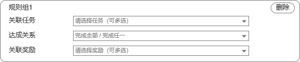
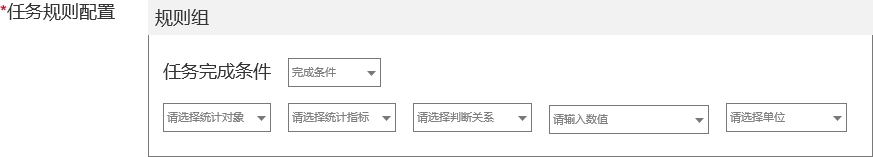
评审过程中持续检查主流程之外的关系状态，使助力绑定从含义模糊的页面访问，变成可执行、可更新的用户动作。
好友点击分享卡片后直接进入活动页。
缺少明确绑定动作，技术无法可靠确认关系增加助力弹窗，以点击“立即助力”作为绑定触发节点。
关系可以被系统明确记录允许新的绑定关系覆盖旧关系。
避免旧绑定阻塞新的助力行为围绕核心乘车链路，拆解事件、字段、触发时机和统计口径，并跟进技术方案与数据验收；用户画像建设中完成 108 项指标的计算逻辑与采集路径梳理。
独立编写《Agent 产品工作流手册》，将工具能力、使用场景、Prompt 结构、Harness / Skill 和 Agent 工具注册组织成可执行的方法，并面向产品团队完成分享，支持成员部署和实际使用。
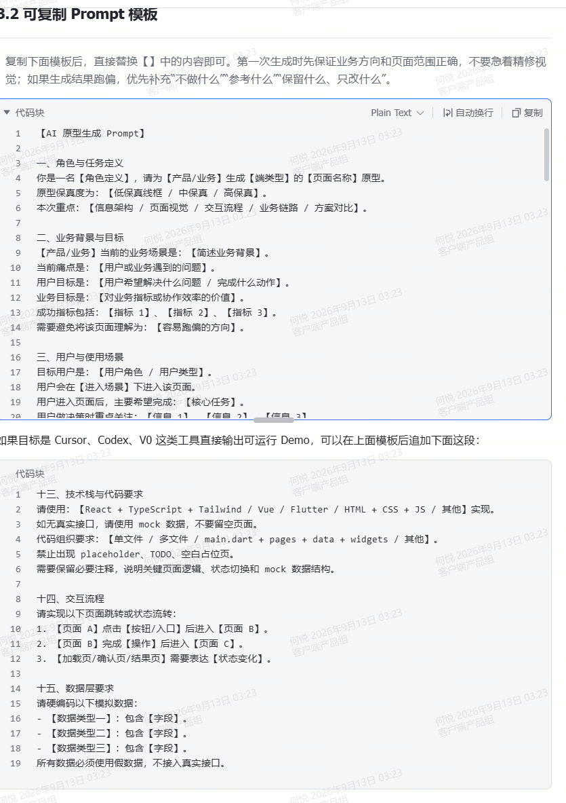
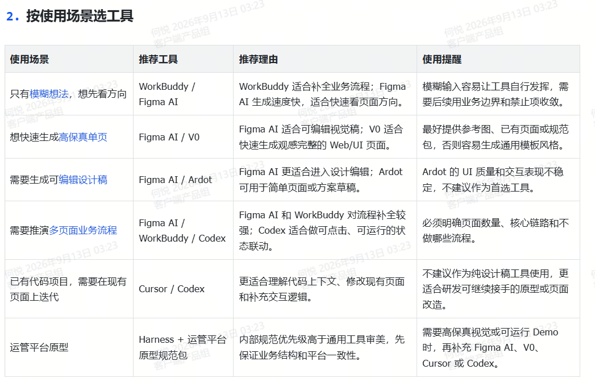
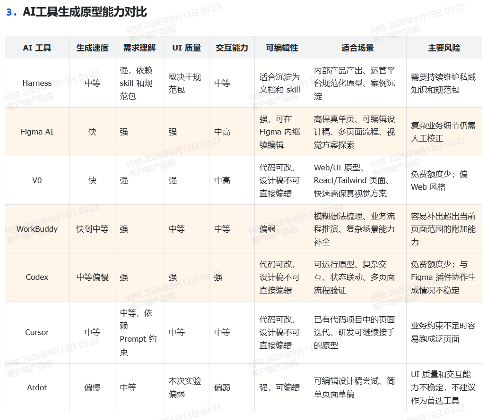
02 / SELECTED WORK
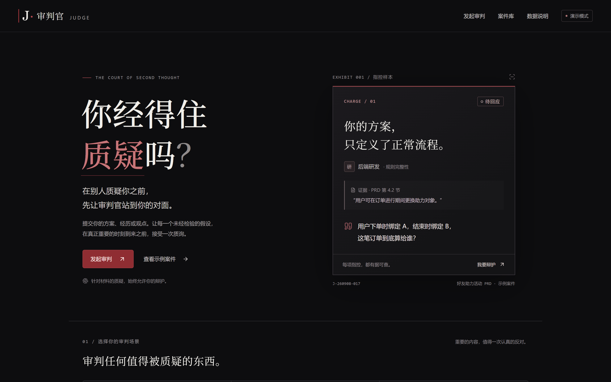
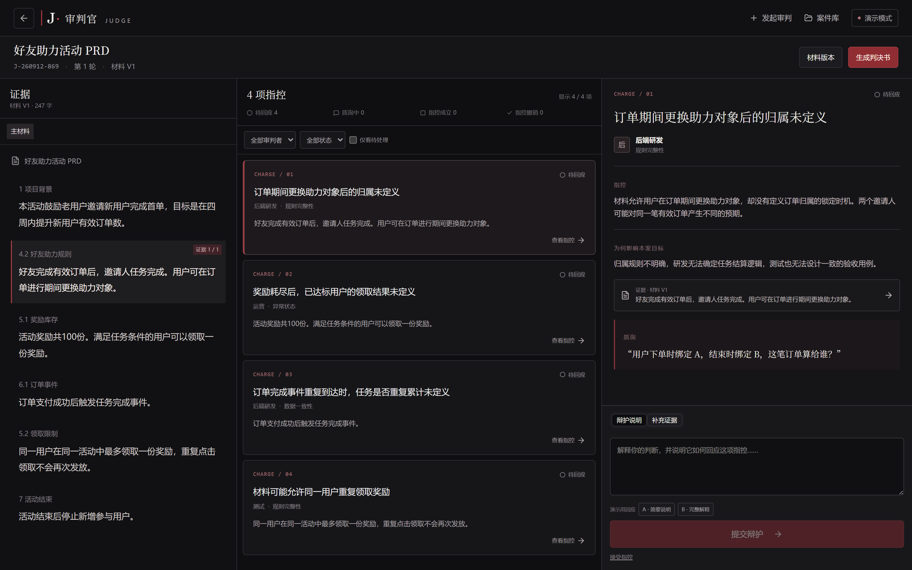
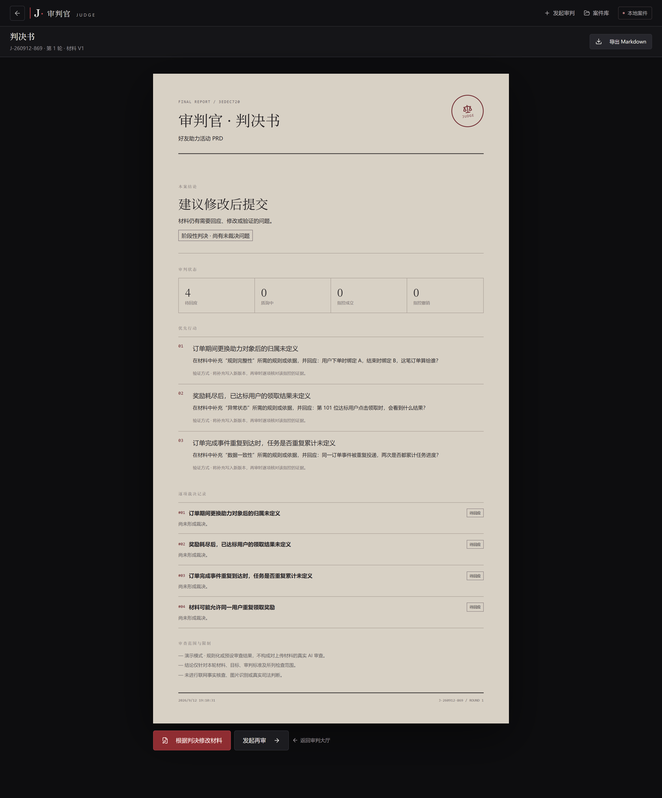
CASE 01 · 2026.05—至今
面向 PRD、简历等重要材料的 AI 审查工具。不同于“一次生成一堆修改建议”，Judge 将审查变成一场可交互的审判：AI 必须基于原文证据提出指控，用户可以逐项辩护、补充材料或修改，再由 AI 重新裁决。
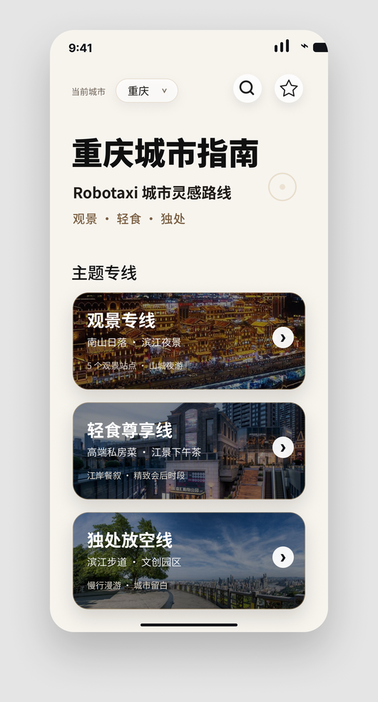
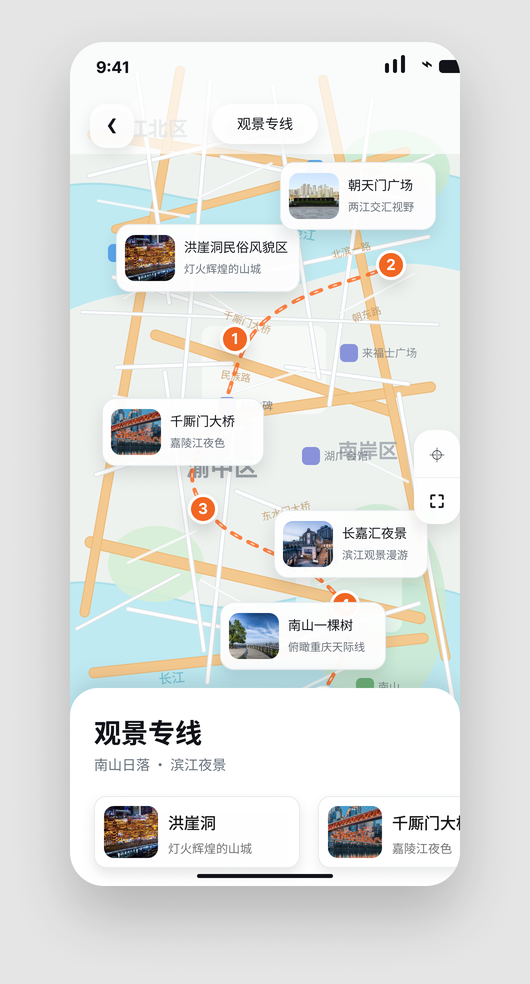
CASE 02 · 2026.06—2026.09
Robotaxi 固定运营区域限制了用户可选目的地。场景卡二期希望从“展示可达地点”进一步解决“用户不知道去哪、为什么去”的问题，因此探索城市指南方向，用主题路线与目的地内容激发出行需求，并由打车入口完成承接。
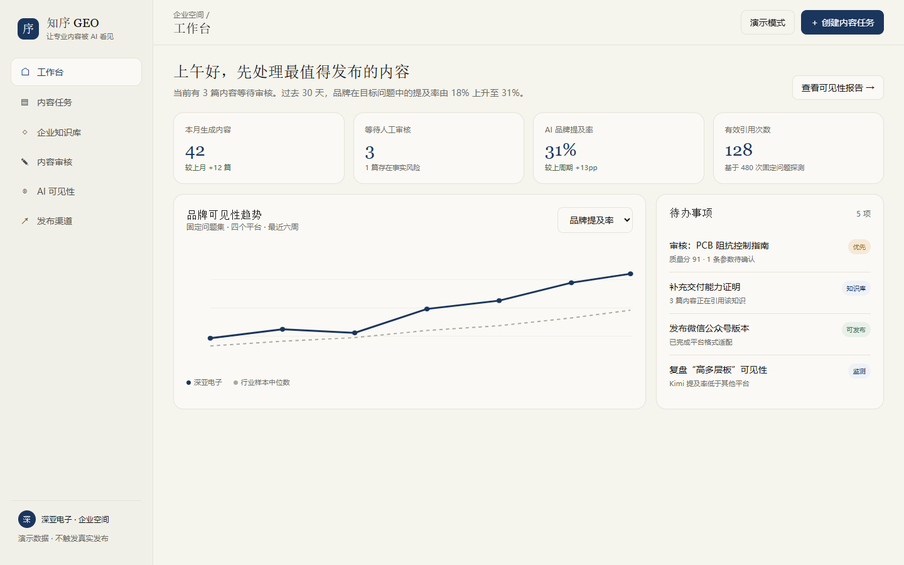
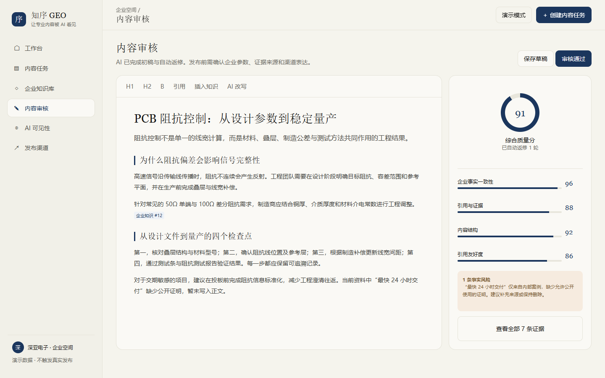
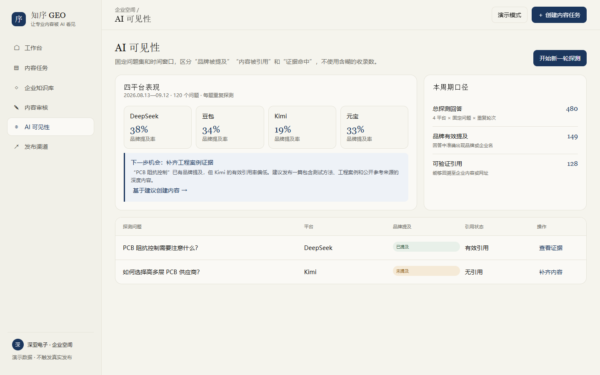
CASE 03 · 2025.11—至今
面向缺少专职内容团队的中小企业，围绕企业知识与目标关键词，搭建「选题—生成—审核—多平台适配—效果观察」的 AI 内容工作流，降低持续内容生产成本，并提升企业内容在大模型中的可见性。
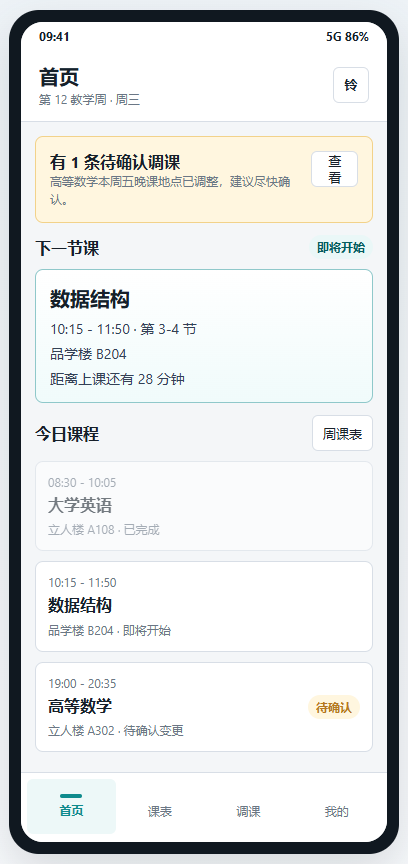
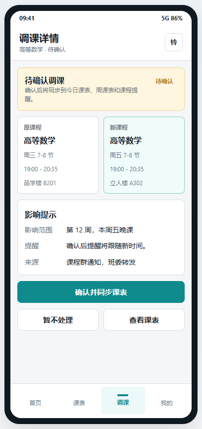
CASE 04 · 2026.02—至今
针对课程信息分散、临时调课难以快速识别的问题，重新设计学生查看「今天上什么、课程哪里变了、是否需要确认」的核心流程，降低课程变化的信息获取成本。
04 / PRODUCT SKILLS
需求拆解、功能规划、业务流程设计、PRD 撰写、原型设计、需求评审与项目推进；熟悉 Axure、Figma、墨刀。
用户调研 · 用户测试 · 竞品分析 · 用户旅程01 / LEARNING PATH
2023.09 — 2027.06